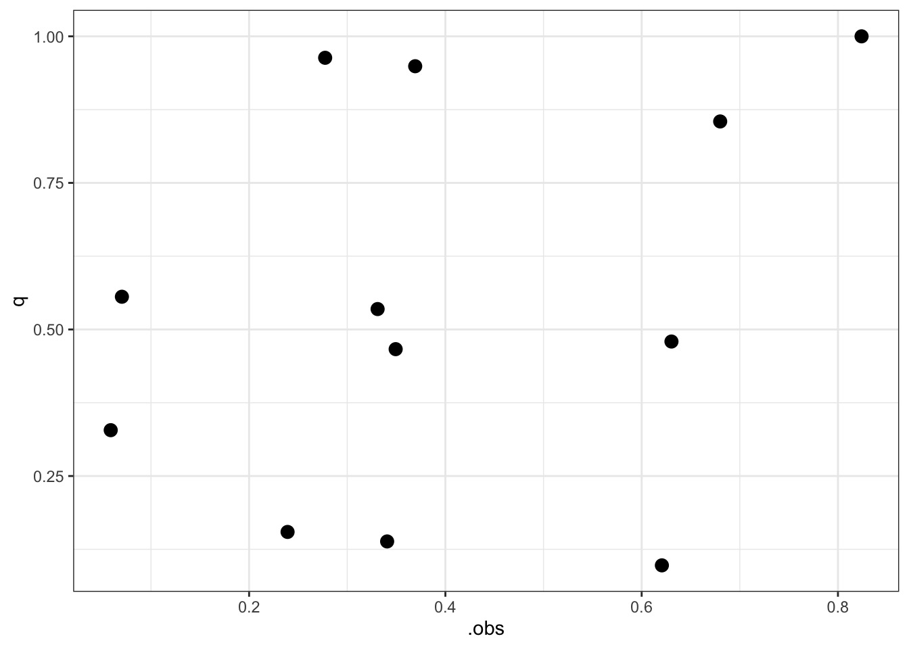
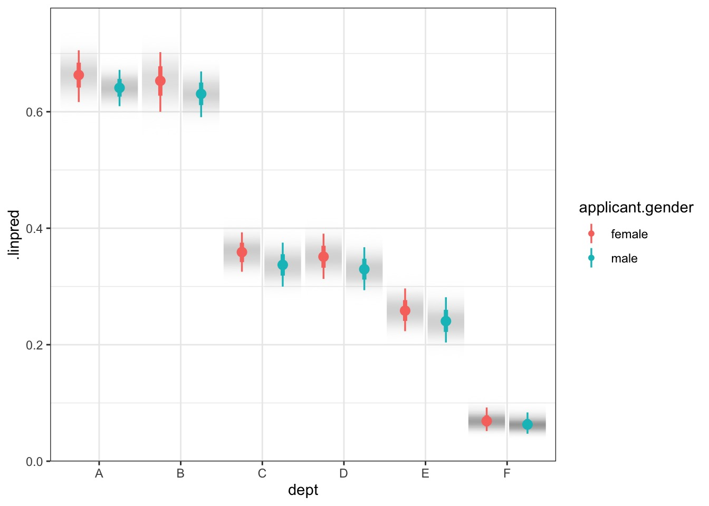
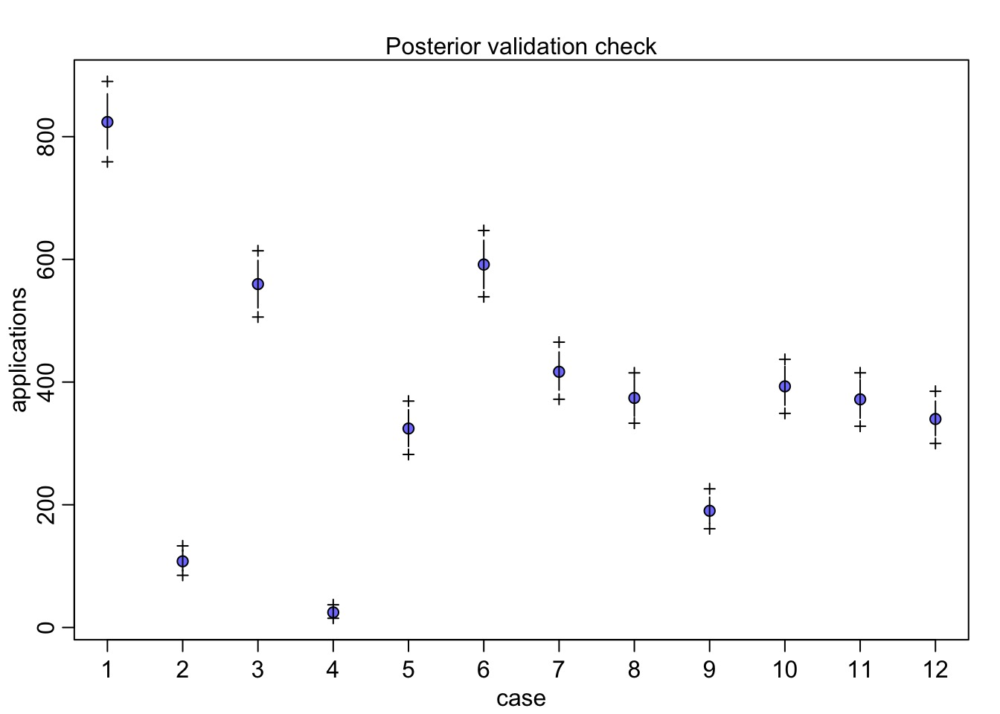
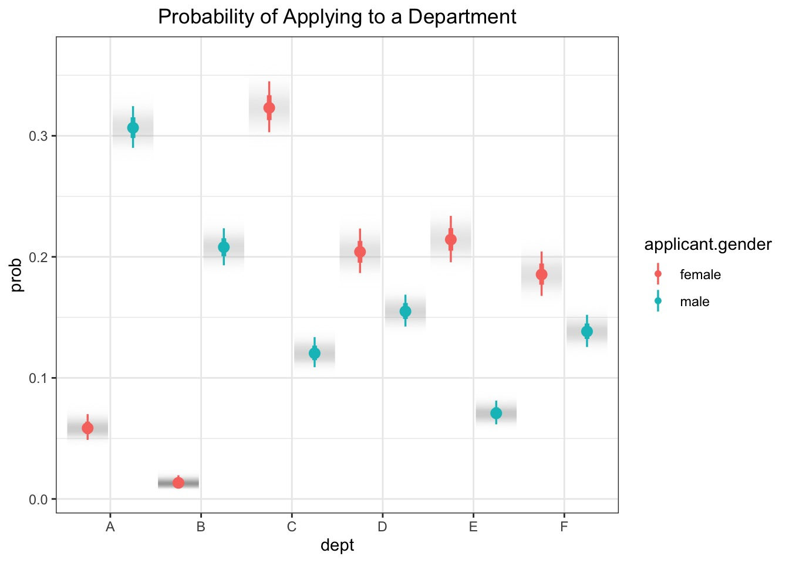

Bayesian Generalized Linear Models

Our Models Until Now
Likelihood:
\(y_i \sim Normal(\mu_i, \sigma)\)
Data Generating Process
\(\mu_i = \alpha + \beta_1 x1_i + \beta_2 x2_i + ...\)
Priors:
\(\alpha \sim Normal(0, 1)\)
\(\beta_j \sim Normal(0, 1)\)
\(\sigma \sim cauchy(0,2)\)
Making the Normal General
Likelihood:
\(y_i \sim Normal(\mu_i, \sigma)\)
Data Generating Process with identity link
f(\(\mu_i) = \alpha + \beta_1 x1_i + \beta_2 x2_i + ...\)
Priors:
…
A Generalized Linear Model
Likelihood:
\(y_i \sim D(\theta_i, ...)\)
Data Generating Process with identity link
f(\(\theta_i) = \alpha + \beta_1 x1_i + \beta_2 x2_i + ...\)
Priors:
…
A Generalized Outline
Why use GLMs? An Intro to Entropy
Logistic Regression
Poisson Regression
Poisson -> Multinomial
What is Maximum Entropy?

Maximum Entropy Principle
-McElreath 2017
Why are we thinking about MaxEnt?
MaxEnt distributions have the widest spread - conservative
Nature tends to favor maximum entropy distributions
- It’s just natural probability
The foundation of Generalized Linear Model Distributions
Leads to useful distributions once we impose constraints

McElreath 2016

McElreath 2016

McElreath 2016

McElreath 2016

McElreath 2016

McElreath 2016

McElreath 2016

McElreath 2016

Information Entropy
\[H(p) = - \sum p_i log \, p_i\]
Measure of uncertainty
If more events possible, it increases
Nature finds the distribution with the largest entropy, given constraints of distribution
Maximum Entropy and Coin Flips
Let’s say you are flipping a fair (p=0.5) coin twice
What is the maximum entropy distribution of # Heads?
Possible Outcomes: TT, HT, TH, HH
- which leads to 0, 1, 2 heads
Constraint is, with p=0.5, the average outcome is 1 heads
The Binomial Possibilities
TT = p2
HT = p(1-p)
TH = (1-p)p
HH = p2
Let’s compare other distributions meeting constraint using Entropy
Remember, we must average 1 Heads, so,
sum(distribution * 0,1,1,2) = 1
\[H = - \sum{p_i log p_i}\]
| Distribution | TT, HT, TH, HH | Entropy |
|---|---|---|
| Binomial | 1/4, 1/4, 1/4, 1/4 | 1.386 |
| Candiate 1 | 2/6, 1/6, 1/6, 2/6 | 1.33 |
| Candiate 2 | 1/6, 2/6, 2/6, 1/6 | 1.33 |
| Candiate 3 | 1/8, 1/2, 1/8, 2/8 | 1.213 |
What about other p’s and draws?
Assume 2 draws, p=0.7, make 1000 simulated distributions
OK, what about the Gaussian?
Constraints: mean, finite variance, unbounded
Lots of possible distributions for normal processes
Flattest distribution given constraints: MaxEnt
Maximum Entropy Distributions
| Constraints | Maxent distribution |
|---|---|
| Real value in interval | Uniform |
| Real value, finite variance | Gaussian |
| Binary events, fixed probability | Binomial |
| Sum of binomials as n -> inf | Binomial |
| Non-negative real, has mean | Exponential |
How to determine which non-normal distribution is right for you
Use previous table to determine
Bounded values: binomial, beta, Dirchlet
Counts: Poisson, multinomial, geometric
Distances and durations: Exponential, Gamma (survival or event history)
Monsters: Ranks and ordered categories
Mixtures: Beta-binomial, gamma-Poisson, Zero-inflated processes
How Distributions are Coupled

A Generalized Outline
Why use GLMs? An Intro to Entropy
Logistic Regression
Poisson Regression
Poisson -> Multinomial
Our Models Until Now
Likelihood:
\(y_i \sim Normal(\mu_i, \sigma)\)
Data Generating Process
\(\mu_i = \alpha + \beta_1 x1_i + \beta_2 x2_i + ...\)
Priors:
\(\alpha \sim Normal(0, 1)\)
\(\beta_j \sim Normal(0, 1)\)
\(\sigma \sim cauchy(0,2)\)
Binomial Logistic Regression
Likelihood:
\(y_i \sim B(size, p_i)\)
Data Generating Process with identity link
logit(\(p_i) = \alpha + \beta_1 x1_i + \beta_2 x2_i + ...\)
Priors:
…
Why Binomial Logistic Regression
Allows us to predict absolute probability of something occuring
Allows us to determing relative change in risk due to predictors
Why a Logit Link?

McElreath 2016
Meaning of Logit Coefficients
\[logit(p_i) = log \frac{p_i}{1-p_i} = \alpha + \beta x_i\]
\(\frac{p_i}{1-p_i}\) is odds of something happening
\(\beta\) is change in log odds per one unit change in \(x_i\)
- exp(\(\beta\)) is change in odds
- Change in relative risk
- exp(\(\beta\)) is change in odds
\(p_i\) is absolute probability of something happening
- logistic(\(\alpha + \beta x_i\)) = probability
- To evaluate change in probability, choose two different \(x_i\) values
Binomial GLM in Action: Gender Discrimination in Graduate Admissions

Our data: Berkeley in 1973
The Gender Gap
Gender
Admit Male Female
Admitted 1198 557
Rejected 1493 1278Doesn’t Look like a Gender Gap if we Factor In Department…
But Gender -> Department Applied To
Porportion Admitted by Department…
What model would you build?
dept applicant.gender admit reject applications
1 A male 512 313 825
2 A female 89 19 108
3 B male 353 207 560
4 B female 17 8 25
5 C male 120 205 325
6 C female 202 391 593Mediation Model
Gender influences where you apply to. Department mediates gender to admission relationship.
One Model
#female = 1, male = 2
UCBadmit <- UCBadmit |>
mutate(gender = as.numeric(applicant.gender),
dept_id = as.numeric(dept))
mod_gender <- alist(
#likelihood
admit ~ dbinom(applications, p),
#Data generating process
logit(p) <- a[gender] + delta[dept_id],
#priors
a[gender] ~ dnorm(0,1),
delta[dept_id] ~ dnorm(0,1)
)
fit_gender <- quap(mod_gender, UCBadmit)What do Priors Imply in a GLMS?
A Flat Prior in Logit Space Might Not Be Flat!
Let’s try a few SDs to see what works!
What is our flat prior?
A New Model
Fit the Model!
Results… men do slightly worse?
mean sd 5.5% 94.5%
a[1] -0.4312203 0.5330873 -1.2831968 0.4207561
a[2] -0.5279033 0.5322783 -1.3785869 0.3227802
delta[1] 1.1080121 0.5350322 0.2529272 1.9630969
delta[2] 1.0632155 0.5371968 0.2046712 1.9217597
delta[3] -0.1502507 0.5347763 -1.0049265 0.7044252
delta[4] -0.1826522 0.5350901 -1.0378296 0.6725252
delta[5] -0.6246444 0.5378490 -1.4842310 0.2349421
delta[6] -2.1727096 0.5468627 -3.0467019 -1.2987173Results… men do slightly worse?
What it means
Relative comparison: Slight Female Advantage? Eh.
mean sd 10% 90% histogram
-0.09682634 0.08074047 -0.200614 0.006134635 ▁▁▁▂▅▇▇▅▂▁▁▁Does our Data Fall in Observations?
Quantile Residuals
Quantile Residuals and Fits
QQ Unif Check
Model Vis with Tidybayes
Model Vis with Tidybayes
Prediction Intervals and Binomial GLMs
Of course, predictions are 1 or 0 for a straight binomial GLM.
But, more than just coefficient variability is at play
So, we simulate # of successes out of some # of attempts.
Can use this to generate prediction intervals
Prediction Model Vis with Tidybayes
Prediction Model Vis with Tidybayes
But what about this?
A Generalized Outline
Why use GLMs? An Intro to Entropy
Logistic Regression
Poisson Regression
Poisson -> Multinomial
Disparities in Who Applied Where?
Modeling How Gender Influences Application
It could be just different departments get different #s.
It could be gender + department.
It could be differential application by department.
How to determine which non-normal distribution is right for you
Use previous table to determine
Bounded values: binomial, beta, Dirchlet
Counts: Poisson, multinomial, geometric
Distances and durations: Exponential, Gamma (survival or event history)
Monsters: Ranks and ordered categories
Mixtures: Beta-binomial, gamma-Poisson, Zero-inflated processes
Poisson Regression
Likelihood:
\(y_i \sim \mathcal{P}(\lambda)\)
Data Generating Process with identity link
log(\(\lambda_i) = \alpha + \beta_1 x1_i + \beta_2 x2_i + ...\)
Priors:
…
Consider the Gender + Department Model
Likelihood:
\(y_i \sim \mathcal{P}(\lambda)\)
Data Generating Process with identity link
\(log(\lambda_i) = \alpha_{gender} + \beta_{dept}\)
Priors:
\(\alpha_{gender} \sim \mathcal{N}(0,1)\) \(\beta_{dept} \sim \mathcal{N}(0,1)\)
Coded
Were those reasonable priors?
And for real
- Up the SD!
Priors at Different SDs
Better Regularizing Priors
Was this Any Good?
What About Gender * Department
Postcheck
But, More Parameters, so Compare
WAIC SE dWAIC dSE pWAIC weight
fit_apply 110.2433 3.18072 0.000 NA 5.917586 1
fit_apply_add 2221.8544 492.01731 2111.611 515.916 603.643871 0What does it Mean?
Code
It’s an Indirect Effect of Gender

A Generalized Outline
Why use GLMs? An Intro to Entropy
Logistic Regression
Poisson Regression
[Poisson = Multinomial]]{style=“color:red”}
Lingering Questions
Well, maybe admission bias differs by departments?
Can we turn our application results into probabilities to calculate direct, indirect, and total effects?
Does Bias Differ by Department?
WAIC SE dWAIC dSE pWAIC weight
fit_gen_int 90.21511 3.396592 0.00000 NA 6.457929 0.9998486738
fit_gender 107.80696 15.647798 17.59184 16.52952 9.044645 0.0001513262Department A is Biased Towards Women - Although Fewer Apply
Q2: How to Turn Poisson Model into Probabilities
Normally we’d use a multinomial to get probabilities of multiple classes. \[X \sim Mult(n, \pi)\]
BUT - a poisson with categories can turn into a multinomial!
Poisson to Multinomial
\[X \sim Mult(n, \pi)\]
If \[X_1 \sim P(\lambda_1)\] \[X_2 \sim P(\lambda_2)\] … \[X_k \sim P(\lambda_k)\]
then n = \(X_1 + X_2 +....X_k\) where \(\pi=(\pi_1,\ldots,\pi_k)\)
So: \[\pi_j=\dfrac{\lambda_j}{\lambda_1+\cdots+\lambda_k}\]
Using our Model for Estimating Pi
- We Can Use our Predictions as Lambda
Big Disparities in Where Different Genders Apply
Calculating the Probabilities of Getting Into Dept A as a Woman
Direct Probability of Admission if a Woman:
[1] 0.8152725Probability of Applying to A if a Woman:
[1] 0.058752850.06 * 0.81 = 0.0486